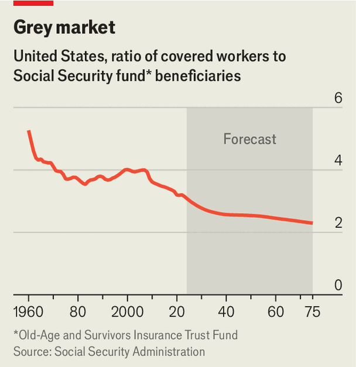
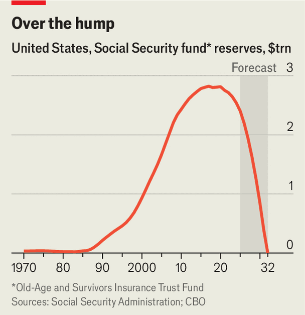

America’s Social Security trust fund is disappearing
Legislators have just six years to fix things
June 4th 2026
AMERICA’S SOCIAL Security trust fund for the country’s elderly citizens is now more than old enough to be drawing a pension itself. When the programme launched in 1940, its future must have seemed assured. Lots of money went in and little came out: for each retired person drawing benefits, more than 150 workers were contributing to the fund, which invested in Treasury securities.
Today, after years of demographic transformation—lower birth rates bringing fewer workers to the labour force, and longer lifespans for the fortunate recipients—the ratio of workers to recipients is less than three to one. In 2017 the reserves held in the trust fund peaked at $2.8trn. Since then, the fund’s size has dropped by $400bn, with more money leaving it in payments to retirees than has entered it in the form of contributions. Outflows are accelerating, and some time around the end of the next presidential term, in late 2032 or early 2033, the fund will run dry.

Washington has a little more than six years to find a remedy, which means that senators elected in November may still be serving their term when the fund runs out. If nothing is done, the immediate consequences for pensioners will be dire. Payments will drop by around 23%, and will slide further in the following decades. The gap between the fund’s revenue and payments last year is estimated to have been around $209bn, about 0.7% of GDP, a gap which would have to be covered by borrowing. The system has been in a similar position before, but that was then.
Big amendments to Social Security have been secured in different political contexts: in 1965 Lyndon Johnson harnessed a supermajority in both houses of Congress to ram through changes that expanded the programme. He created America’s federal health-insurance schemes at the same time. In 1983, when the fund was months away from depletion, Democrats and Republicans inked an agreement that steadily increased the retirement age from 65 to 67 and broadened the tax base.

The changes required need not be drastic if they are made soon. Research published last year by Wendell Primus and Tara Watson of the Brookings Institution and Jack Smalligan of the Urban Institute suggests a series of fixes. They would raise payroll taxes fractionally, from 12.4% to 12.6%, and add some workers in local and state governments who do not currently pay into Social Security. At the same time, they suggest increasing retirement ages for better-paid workers from 67 to 70 and taxing their benefits more.
But getting the policy right is not the problem. The politics of Social Security and partisanship are both far more thorny than they once were. “A bipartisan group of people could pencil it out and we’d have a reform done, but that’s completely different to the political calculus,” says Daniel Bunn, president of the Tax Foundation, a fiscal think-tank.
Imagining a repeat of the aisle-crossing deal that fixed the system in 1983 is now extremely hard. Based on data from Voteview, a research project cataloguing every American congressional vote for almost the past century and a half, legislative polarisation has never been as high as it is today. What’s more, President Donald Trump has shifted the Republican Party’s position on Social Security, an area where the Democrats have tended to command more public trust. During the 2024 presidential campaign all discussion of reform to the system was avoided, and Mr Trump’s platform promised no cuts and no increases to the retirement age.
It is not just Washington inertia that makes reforms tough. In polling conducted by YouGov for The Economist, 71% of respondents believe Social Security spending should be increased, more than for any other category of government spending. In the same poll, 45% say it should be increased a lot. The proportion who wish it to be reduced is just 5%, slightly less than the share of Americans who believe that covid-19 vaccinations were used to microchip the population.
A small clutch of politicians have more inventive proposals. Senators Tim Kaine, a Democrat, and Bill Cassidy, a Republican, want the federal government to borrow a huge sum, $1.5trn, to invest in risky assets like stocks. The proposal meets one of the long-held criticisms of the fund: that it has been much too conservative. Given its long-term liabilities, they argue, the fund could have taken far greater risk and reaped greater returns.
But the proposal offers nothing to improve the finances of Social Security in the short, medium or even quite long term: Mr Cassidy and Mr Kaine propose that the new $1.5trn investment compound and grow in size over 75 years, after which its returns can offset the borrowing needed to keep Social Security running in the interim. The Centre for Retirement Research at Boston College estimates that would require the government to borrow $25trn.
America’s public spending on old-age welfare, at 7.3% of GDP, is below the average in the rich world, and far lower than the double-digit figures in many European countries. But the American budget deficit is unusually large by rich-world standards, at almost 7% of GDP in 2025, compared with a little more than 2% among the other advanced economies.
Some analysts are less worried about the exhaustion of the account. Not only has the regime been rescued before, but in some ways it is an accounting trick. Had the federal government decided to finance Social Security payments from general taxation in 1940, rather than hypothecating American payroll taxes for the purpose, the government might have run smaller budget deficits in the past (when the trust fund was growing) and will run larger ones in the future (after its depletion). The net effect, they argue, is basically a wash.
There is some truth to the fact that the fund is a book-keeping oddity: the trust is money the government owes to itself. But if the fund is an accounting fiction, it is nevertheless a legally binding one. When the fund is spent, payments will fall automatically. The politicians who control Congress between now and then will determine its future generosity, funding model and fiscal sustainability.
The existence of the trust, and the hypothecated taxes which pay for it, provide some fiscal discipline. A direct connection between taxes paid by today’s workers and benefits received by today’s pensioners helps to ensure some element of intergenerational balance, so endless liabilities are not passed down to younger generations. But acting early to tackle well-known problems before they reach a crisis moment is not how Washington works. In the absence of that, expect yet more borrowing. ■
Correction (June 3rd): An earlier version of this article slightly misquoted Daniel Bunn; he said a proposed reform was “different”, not “difficult”, to the political calculus. Sorry.
Stay on top of American politics with The US in brief, our daily newsletter with fast analysis of the most important political news, and Checks and Balance, a weekly note that examines the state of American democracy and the issues that matter to voters.